السلسلة 4
الشاحنة (صنف C) · 21 سؤال بالصوت. حاول تجاوب بوحدك، من بعد شوف الجواب.
السؤال 1

بيّن الجواب
الجواب الصحيح: 2
بما أنك كتجر مقطورة وعرضها كبير نسبيا (2.10 متر) مقارنة بالسيارة العادية، وفي قنطرة ضيقة، فالقاعدة العامة كاتقول أن العربة الكبيرة أو اللي عندها صعوبة فالمناورة كاتكون ما عندهاش الأولوية.
فهذا كيعني أن السيارة اللي جاية من قدام هي اللي عندها الأولوية في العبور من القنطرة الضيقة. 🌉🚘
السؤال 2
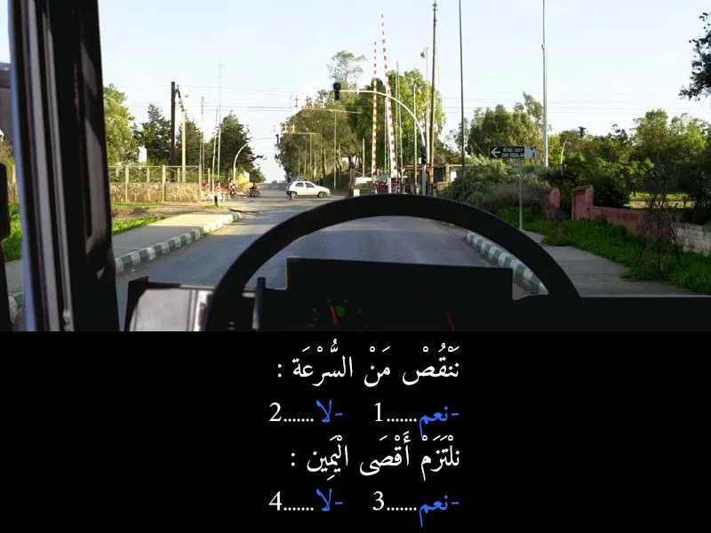
بيّن الجواب
الجواب الصحيح: 1 و 3
كاين قدامنا ملتقى طرق مع سكة حديدية (الباليزات ديال الحاجز طالعين) وإشارة ضوئية. السؤال المطروح هو على جوج حوايج: السرعة والموقع في الطريق.
حنا قربنا لملتقى طرق فيه سكة حديدية وإشارة ضوئية. هاد البلايص دائما كيحتامو الانتباه والحيطة والحذر، وخا تكون الإشارة خضرا والحاجز طالع. ديما خاص ننقصو من السرعة باش نقدرو نتحكمو في السيارة ونوقفو إذا لزم الأمر أو كان شي خطر مفاجئ.
في حالة ملتقيات الطرق، خصوصا اللي فيها حركة سير كثيفة أو إشارات ضوئية، من الأفضل ديما نلتزمو باليمين إذا ماكناش غادي ندورو على اليسار أو نغيرو الاتجاه. هادشي كيسهل حركة السير وكيجنب الارتباك، وكيخلي المسار الأيسر للي باغي يدوبل أو يدور على اليسار.
السؤال 3
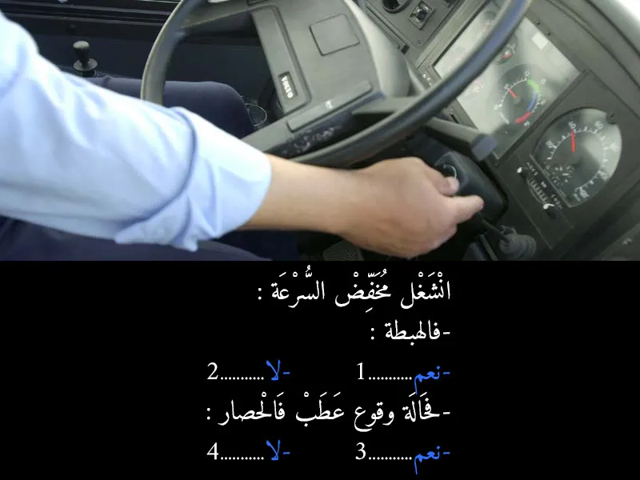
بيّن الجواب
الجواب الصحيح: 1 و 3
شنو هو "مخفض السرعة"؟
مخفض السرعة هو واحد النظام كيتواجد في السيارات الكبيرة (الشاحنات والحافلات) وكيساعد على تقليل السرعة بلا ما يحتاج السائق يستعمل الفران (الفرامل) بشكل مستمر. هادشي كيحافظ على الفرامل من السخونة الزايدة والتآكل، وكيخليها واجدة للاستعمال في الحالات الطارئة. كاين أنواع مختلفة، بحال الـ "Engine Brake" اللي كيستعمل محرك السيارة باش ينقص السرعة، أو الـ "Retarder" اللي كيكون مستقل على المحرك.
- ملي كتكون هابطة، خصوصا إذا كانت طويلة ومنحدرة بزاف، كتزيد سرعة العربة بفعل الجاذبية الأرضية. الاستعمال المستمر للفرامل في الهابطة كيسخنها ويقدر يفقدها الفعالية ديالها. هنا كيجي الدور ديال مخفض السرعة، حيث كيساعد في الحفاظ على سرعة مناسبة ومستقرة بلا ما تضغط على الفرامل الأساسية. هادشي كيعتبر من قواعد السياقة الآمنة للعربات الثقيلة.
- إذا وقع عطب في الفرامل الرئيسية، كيولي مخفض السرعة هو الحل البديل أو الإضافي باش تنقص من سرعة العربة وتتحكم فيها قبل ما توقع شي كارثة لا قدر الله. هو ماشي كيعوض الفرامل 100%، ولكن كيعاون بزاف في هاد الحالة الطارئة.
السؤال 4
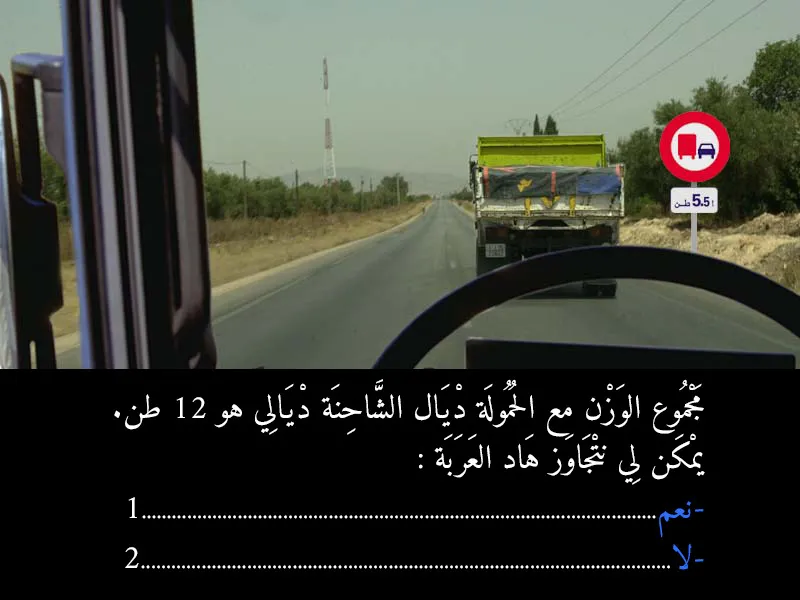
بيّن الجواب
الجواب الصحيح: 2
بما أن الشاحنة ديالك الوزن ديالها 12 طن، و12 طن راها كبر من 5.5 طن، إذن منع الدوبلاج كيطبق عليك. ما عندكش الحق تدوبل فهاد البلاصة.
السؤال 5
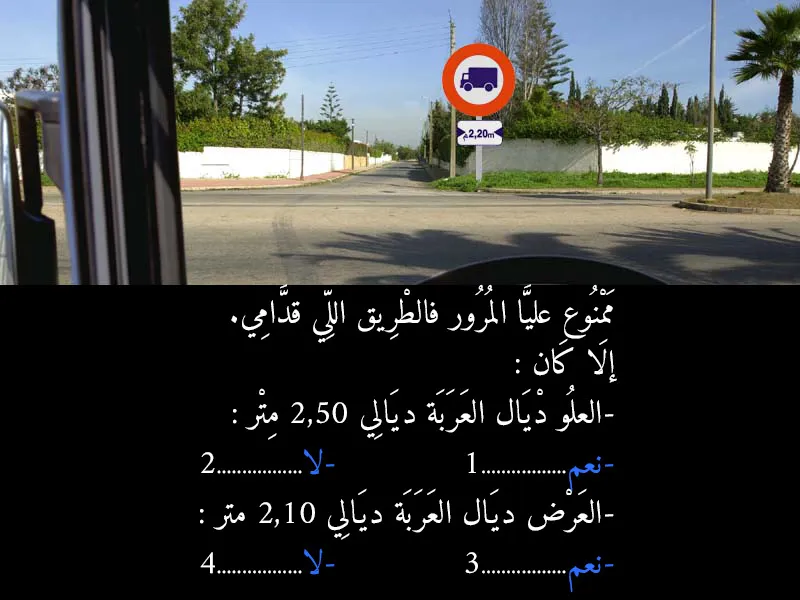
بيّن الجواب
الجواب الصحيح: 2 و 4
شوف، ديك البلاكة اللي لتحت، اللي فيها "2,20m" ومعاها جوج سهمان واحد على اليمين و واحد على اليسار (أفقيا)، هاديك كتقوليك "أي كاميو العرض ديالها كبر من 2 متر و 20 سنتيمتر، راه ما عندهاش الحق دوز من هاد الطريق".
إلا كان العلو ديال العربة ديالك 2 متر و 50 سنتيمتر؟
هنا خاصك تركز: العلامة اللي كاينه كتدوي على العرض، ماشي على العلو. ما كايناش شي بلاكة هنا كتقوليك ممنوع على اللي علوها كيفوت 2 متر و 50 سنتيمتر. إذن، الجواب: لا (ماشي ممنوع عليك على حساب هاد العلامة).
إلا كان العرض ديال العربة ديالك 2 متر و 10 سنتيمتر؟
العلامة كتقول ممنوع على اللي عرضها كيفوت 2 متر و 20 سنتيمتر.
العربة ديالك العرض ديالها 2 متر و 10 سنتيمتر.
2 متر و 10 سنتيمتر راها صغر من 2 متر و 20 سنتيمتر. إذن، ما غيكونش عندك مشكل مع هاد العلامة. الجواب: لا (ماشي ممنوع عليك على حساب هاد العلامة).
السؤال 6
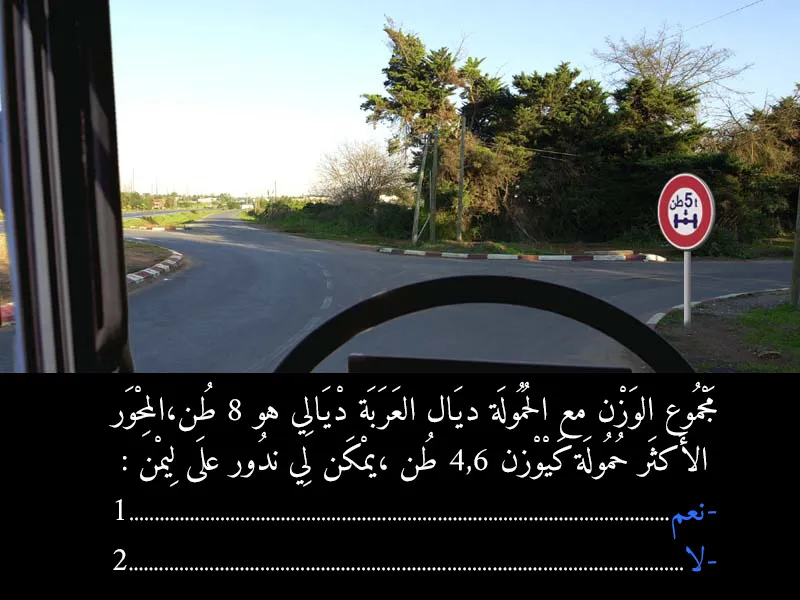
بيّن الجواب
الجواب الصحيح: 1
هاد البلاكة اللي على اليمين. ديك الدائرة الحمرا اللي فيها رقم "5 طن" (5t)
- كتعني "ممنوع المرور على العربات اللي الوزن ديال أي محور من المحاور ديالها كيفوت 5 طن". بعبارة أخرى، كتراقب شحال كيهز المحور الواحد.
الوزن الإجمالي ديال العربة ديالك هو 8 طن (هاد الوزن الإجمالي ماشي هو اللي كتحكم فيه هاد العلامة).
المهم هو: المحور اللي كيهز التقل بزاف في العربة ديالك كيوزن 4.6 طن.
دابا غادي نقارنو:
العلامة كتقول: ممنوع إذا كان المحور كيفوت 5 طن.
المحور ديالك كيهز 4.6 طن.
- بما أن 4.6 طن راها قل من 5 طن، يعني المحور ديالك ما فايتش الوزن المسموح به اللي كتقول بيه العلامة. إذن ما كاين حتى شي منع.✓
الجواب الصحيح هو: نعم. يمكن ليك تدور على اليمين حيت العلامة ما كطبقش عليك.
السؤال 7
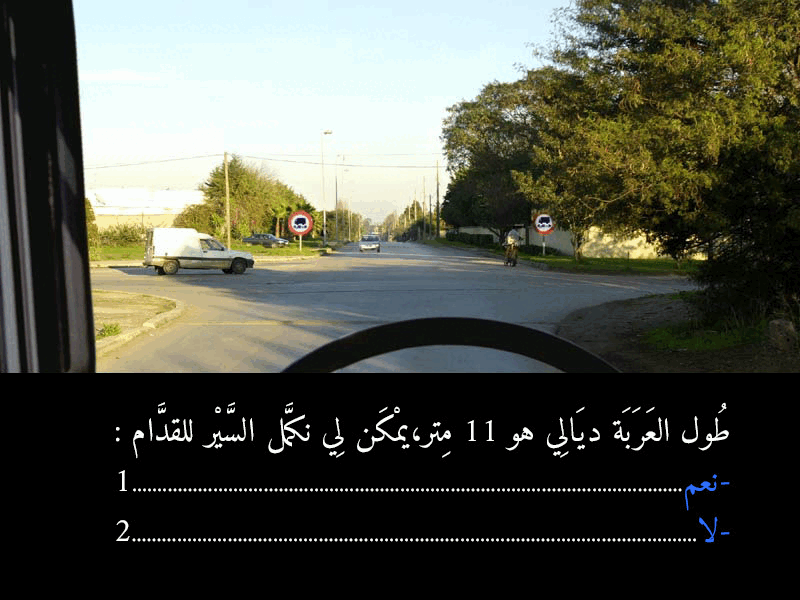
بيّن الجواب
الجواب الصحيح: 2
هذا العلامة فيها دائرة حمرا وتحتها "10m" (10 متر). هاديك كتعني "ممنوع دوز من هاد الطريق الفرعية إذا كان طول العربة ديالك كيفوت 10 أمتار"
- "طول العربة ديالي 11 متر، يمكن لي نكمل السير للقدام؟"
بما أن طول العربة ديالك 11 متر، وهاد الرقم راه فايت 10 أمتار اللي كتقول بيها البلاكة.
إذن، راه ممنوع عليك تكمل السير للقدام في هاد الطريق.
السؤال 8
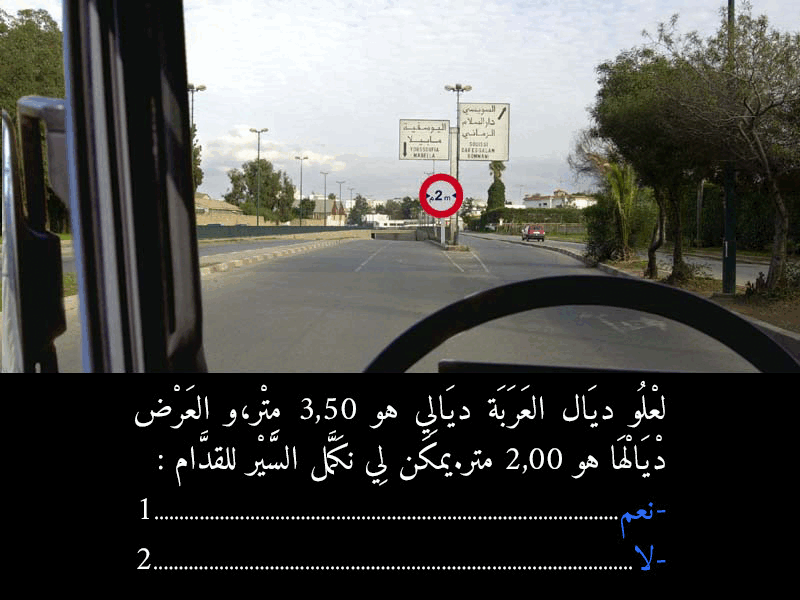
بيّن الجواب
الجواب الصحيح: 1
ديك البلاكة اللي فالوسط ديال الطريق، ديك الدائرة الحمرا اللي مكتوب فيها "2m" ومصاوبين فيها جوج سهمان واحد على اليمين و واحد على اليسار (أفقيا). هاديك كتعني "ممنوع دوز من هنا إلا كان العرض ديال العربة ديالك فايت جوج مترو".
السؤال قاليك:
العلو ديال العربة ديالك هو 3 متر و 50 سنتيمتر (هاد المعلومة ما كتهمنيش مع هاد العلامة).
العرض ديالها هو 2 متر.
دابا غانقارنو العرض ديال العربة ديالك مع الحد اللي فالبلاكة:
العرض ديالك: 2 متر.
الحد الأقصى المسموح به فالبلاكة: 2 متر.
بما أن العرض ديالك هو 2 متر، وهو ما فايتش الحد الأقصى المسموح به (اللي هو 2 متر بالضبط)، إذن العربة ديالك ما عندهاش مشكل باش دوز. هي ما تجاوزاتش الحد.
الجواب الصحيح هو: نعم.
السؤال 9
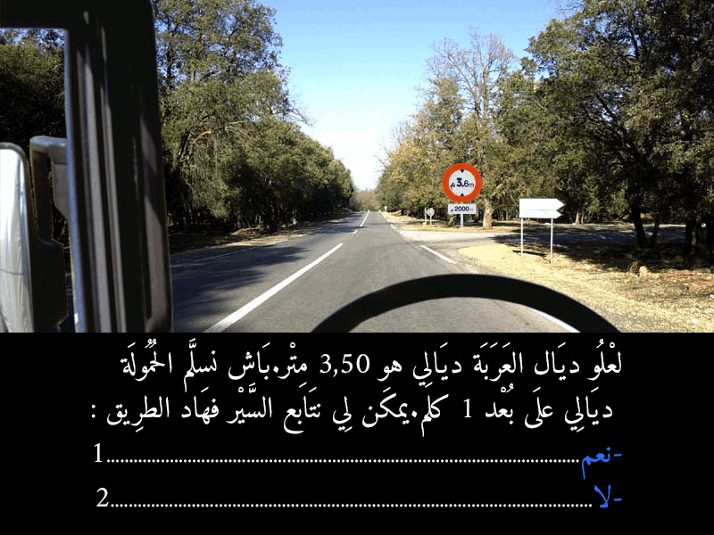
بيّن الجواب
الجواب الصحيح: 1
العلو ديال العربة ديالك هو 3 متر و 50 سنتيمتر.
وبغيتي تسلم الحمولة ديالك على بعد 1 كيلومتر من دابا.
دابا غانقارنو العلو ديال العربة ديالك مع الحد اللي فالبلاكة:
العلو ديالك: 3.50 متر.
الحد الأقصى المسموح به فالبلاكة: 3.6 متر.
بما أن 3.50 متر راها قل من 3.6 متر، يعني العربة ديالك العلو ديالها مسموح به. ما عندكش مشكل مع هاد العلامة ديال المنع.
وبما أن نقطة التسليم ديالك على بعد 1 كيلومتر، والمنع كيسالي حتى لـ 2 كيلومتر، فهادشي كيعني أنك تقدر توصل لبلاصتك بلا مشكل.
الجواب الصحيح هو: نعم.
السؤال 10
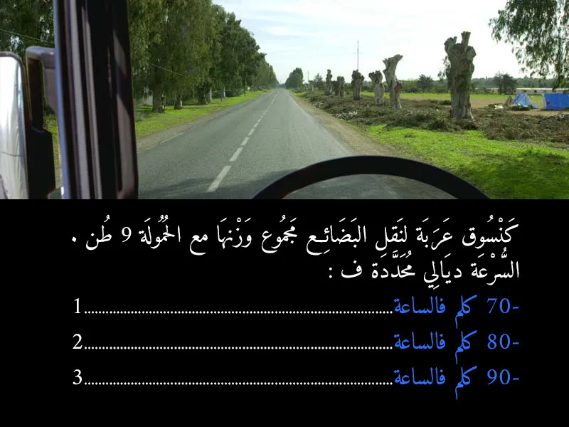
بيّن الجواب
الجواب الصحيح: 3
كيحدد السرعة القصوى على حساب "الوزن مع الحمولة":
من 3.5 طن إلى 12 طن:
السرعة في طريق السيار: 100 كلم/سا.
السرعة خارج المدينة (طريق عادية): 90 كلم/سا.
من 12 إلى 19 طن:
السرعة في طريق السيار: 90 كلم/سا.
السرعة خارج المدينة (طريق عادية): 80 كلم/سا.
فوق 19 طن:
السرعة في طريق السيار: 80 كلم/سا.
السرعة خارج المدينة (طريق عادية): 70 كلم/سا.
- "من 3.5 طن إلى 12 طن":
بالنسبة لـ "السرعة خارج المدينة" (اللي هي الطريق اللي كانت في الصورة السابقة، طريق عادية وماشي لوطوروت)، السرعة المحددة هي 90 كلم/سا.
إذن، حيث الكاميو ديالك فيه 9 طن، وهو داخل في الخانة ديال "من 3.5 طن إلى 12 طن"، والسرعة في الطريق العادية خارج المدينة هي 90 كيلومتر في الساعة.
الجواب الصحيح هو: 90 كلم في الساعة.
السؤال 11
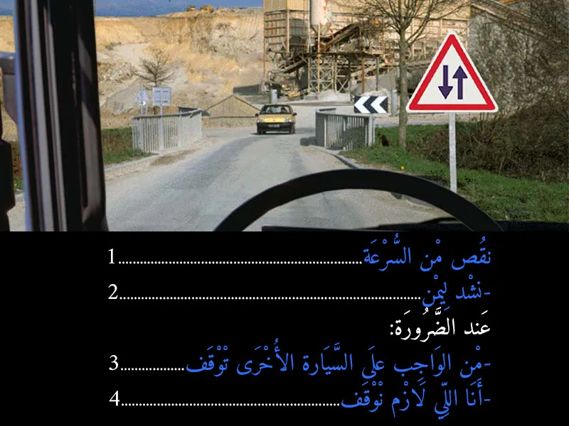
بيّن الجواب
الجواب الصحيح: 1 و 2 و 4
- ننقص من السرعة؟
اه، ضروري تنقص السرعة. حيت كنتي ربما فواحد الطريق ذات اتجاه واحد، ودابا غتولي تشوف العربات جاية من قدامك. خاصك تكون مستعد وتتحكم في الموقف.
- نشد اليمين؟
حيت الطريق دابا فيها السير فالجويه بجوج. خاصك تشد اليمين ديالك باش تخلي بلاصة للي جاي من قدامك وتجنب أي خطر.
- بما أن السيارة الأخرى وصلت هي الأولى للمقطع الضيق، فليها الأولوية في المرور. يعني لا، ماشي من الواجب عليها توقف. فمن الواجب عليا أنا اللي نوقف ونخليها دوز
السؤال 12
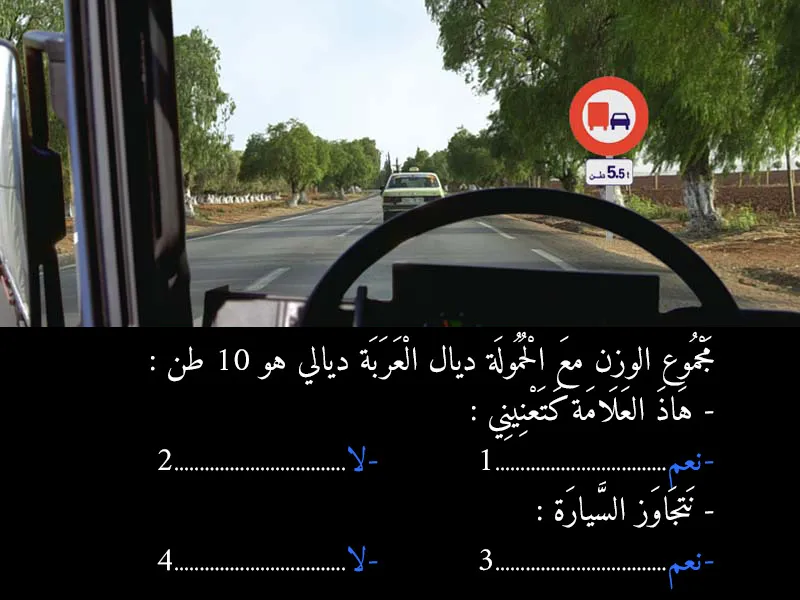
بيّن الجواب
الجواب الصحيح: 1 و 4
لبلاكة اللي على اليمين. تحتها مكتوب "5.5 طن". هاد البلاكة كتعني: "ممنوع الدوبلاج (التجاوز) على أي كاميو أو عربة كبيرة الوزن ديالها بالسلعة ديالها فايت 5 طن ونص"
- اه. الكاميو ديالك فيه 10 طن. و10 طن راها كبر من 5 طن ونص. إذن، هاد العلامة راهي كتهتم بيك وكتطبق عليك. الجواب: نعم.
- لا. بما أن هاد العلامة كتهتم بيك وكتمنع الدوبلاج على الكاميوات اللي بحالك، فراه ما عندكش الحق تدوبل فهاد البلاصة. الجواب: لا.
السؤال 13
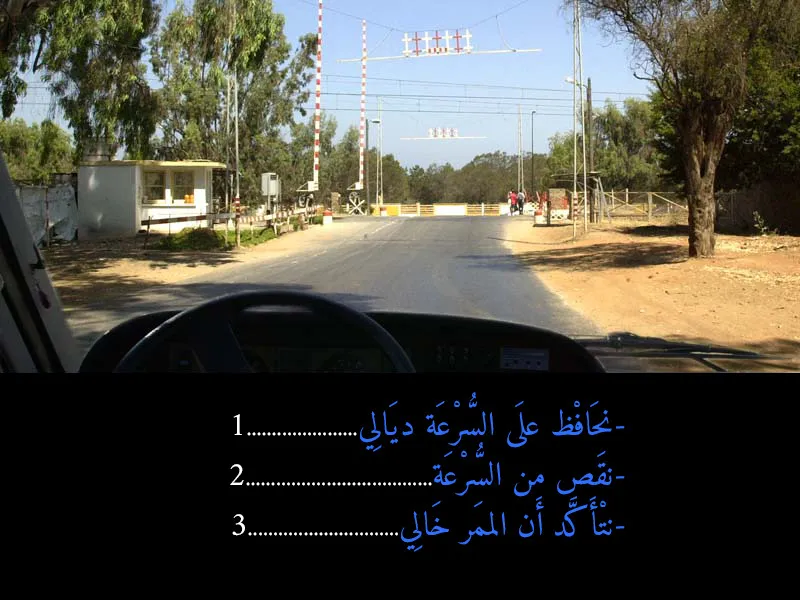
بيّن الجواب
الجواب الصحيح: 2 و 3
هنا، حنا قربنا لسكة ديال التران. واخا الحاجز ديال السكة الحديدية اللي كينزل ويطلع راه طالع الفوق، وهادشي كيعني بلي تقدر دوز، ولكن خاصك ترد البال بزاف.
- لا! ما يمكنش ليك تخلي نفس السرعة. هادي بلاصة ديال خطر كبير، وخا يكون كلشي كيبان مزيان. السرعة الزايدة فهاد البلاصة تقدر تسبب كوارث.
- ضروري تتأكد بعينيك بجوج جهات ديال السكة واش ما جاي حتى شي تران، وواش ما كاين حتى شي حاجة فالطريق. واخا الحاجز طالع، ديما خاصك تزيد تتأكد قبل ما تدوز. هادي هي السلامة الحقيقية.
السؤال 14

بيّن الجواب
الجواب الصحيح: 2
ملي كتكون الطريق ضيقة بزاف وميمكنش يدوزو جوج طوموبيلات فـ نفس الوقت (التقابل غير ممكن)، القاعدة هي أن المركبة الأكبر حجماً أو الأثقل وزناً هي اللي خاصها تعطي حق الأسبقية للمركبات اللي صغر منها. فالصورة، حنا فـ كاميو، والطوموبيل اللي جاية من قدامنا صغر من الكاميو. لهذا، حنا اللي خاصنا نوقفوا ونعطيوها حق الأسبقية باش دوز هي الأولى.
بالإضافة، في بعض الحالات، العربة اللي هابطة خاصها تعطي حق الأسبقية للعربة اللي طالعة (إلا إذا كانت العربة اللي هابطة هي الأكبر حجماً). في هذه الحالة، الكاميو كيبان طالع شوية في منحدر. لكن القاعدة الأساسية هي حجم ووزن المركبة.
السؤال 15

بيّن الجواب
الجواب الصحيح: 1
ملي كتكون عربة كبيرة بزاف، خاصك ديما تنقص من السرعة ديالك خصوصاً ملي كيكون شي واحد جاي من قدامك (بحال الكار اللي فـ الصورة). وهادشي كيخليك تتحكم مزيان فالكاميو ديالك، وكتعطي المساحة الكافية باش دوز العربة الأخرى بأمان. وضروري تشد اليمين ديالك باش تخلي الطريق للعربات الأخرى وتتجنب أي خطر ديال التقابل. هادشي كيتعتبر من قواعد السياقة الدفاعية والوقاية من الحوادث.
السؤال 16
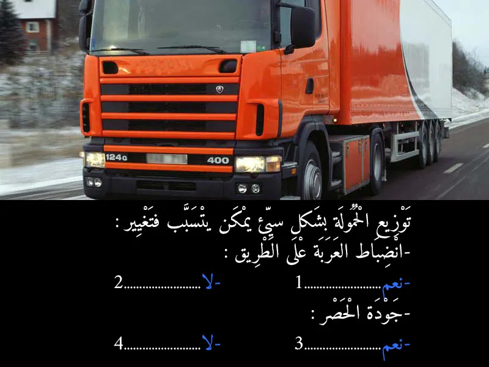
بيّن الجواب
الجواب الصحيح: 1 و 3
- ملي السلعة كتكون موزعة بطريقة سيئة، الكاميو كينقص ليه الثبات ديالو وكيولي صعيب باش تحكم فيه، خصوصًا فالمنعرجات أو الريح.
- حتى جودة الحصر كيتأثر، حيت الوزن الزائد ولا اللي ماشي موزّع مزيان كيقدر ينقص من فعالية الفرانات ويزيد مسافة الوقوف.
السؤال 17
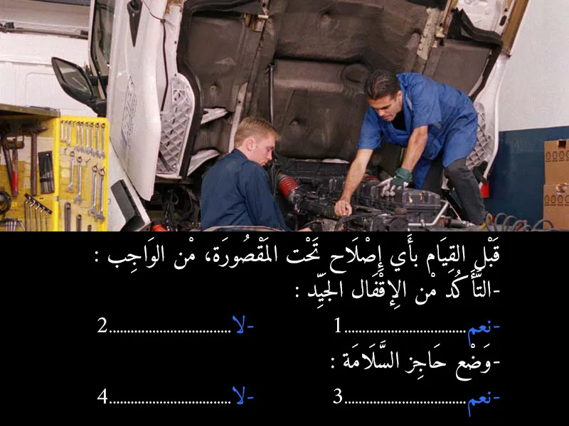
بيّن الجواب
الجواب الصحيح: 1 و 3
- ضروري تأكد أن الكابينة ديال الكاميو متبتة ومسدودة مزيان من الفوق باش ماطيحش عليك وتآذيك. هادي مسألة ديال السلامة.
- من الأحسن ديما تزيد تحط شي حاجز أمان إضافي تحت الكابينة كضمانة ثانية، باش حتى إذا فشل التثبيت الأول، تكون محمي.
السؤال 18
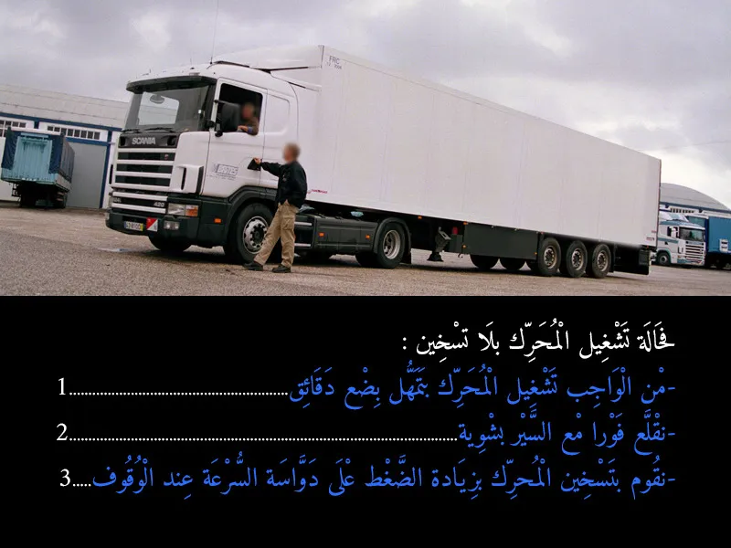
بيّن الجواب
الجواب الصحيح: 2
بشكل عام، ملي كتشعل محرك الكاميو (أو أي سيارة)، ما خاصكش تخليه خدام بلا ما يتحرك لمدة طويلة باش يسخن. هاد الطريقة (التسخين وهو واقف) كتخسر المحرك وكضيع المازوط. الأحسن هو تشعلو و تقلع فوراً غير بشوية وبلا ما تضغط على الموطور (يعني ما تكسيريش بالجهد) حتى يسخن المحرك ويرجع لدرجة الحرارة العادية ديالو. هادشي كيخلي الزيت يدور مزيان فالمحرك وكيسخن بواحد الشكل اللي مزيان ومفيد للموطور.
السؤال 19
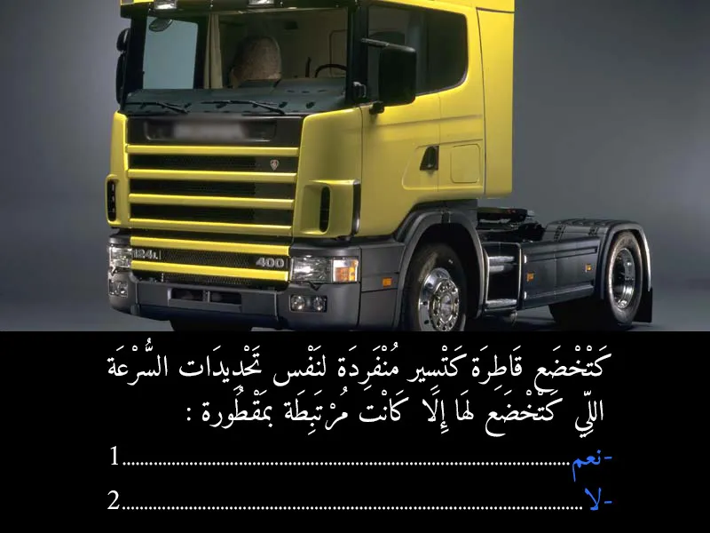
بيّن الجواب
الجواب الصحيح: 1
القاطرة (التي تُستعمل لجرّ المقطورات) حتى إلى كانت كتسير بوحدها (بلا مقطورة)، كتخضع لنفس تحديدات السرعة اللي كتخضع ليها إلا كانت مرتبطة بمقطورة، حيث هي مصنفة تقنيًا كعربة جرّ ثقيلة، وبالتالي كيتحسب ليها نفس القوانين المرتبطة بالنوع ديالها سواء مرتبطة أو لا
السؤال 20

بيّن الجواب
الجواب الصحيح: 2
الجواب الصحيح هو ثانية واحدة. أغلب الدراسات بتشير إن وقت رد فعل السائق العادي بيكون حوالي ثانية، ممكن يزيد أو ينقص شوية على حسب الشخص والظروف، لكن المتوسط هو ثانية.
السؤال 21
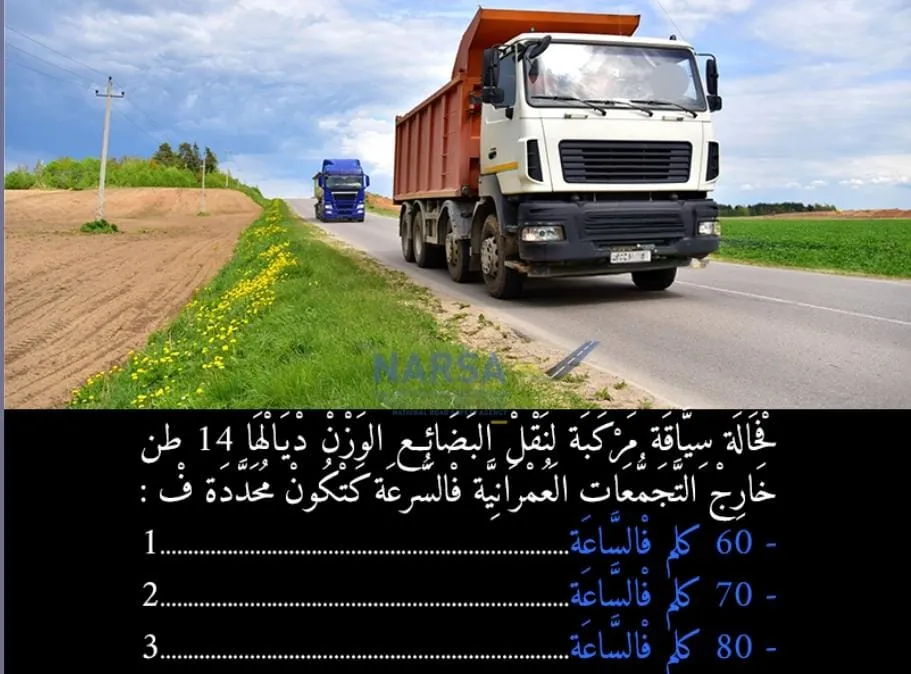
بيّن الجواب
الجواب الصحيح: 3
الكاميوات اللي وزنهم من 12 حتى لـ 19 طن، السرعة ديالهم خارج المدينة هي 80 كيلومتر في الساعة